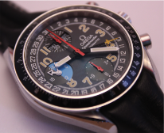
Automatic watch. Like new condition.
Stainless steel bezel, black dial with three smaller dials. On main dial; white hour and minute hands, yellow tipped date hand, red stopwatch second hand. On 12o'clock dial; red stopwatch minute hand, window for day and month. On 6o'clock dial; red stopwatch hour hand. On 9o'clock dial; white second hand and white arrow shaped 24hour hand. Black leather strap (Omega branded) and Omega stainless steel buckle.
Comes in red Omega box. No papers. (#1004)
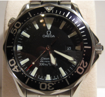
A Quartz watch, like new condition.
Stainless steel bezel, black rotating bezel, black dial, white/ glow in dark hour markers and smaller white minute markers, silver hour and minute hands, silver and red tipped second hand, date at 3o'clock position, stainless steel Omeaga bracelet, butterfly button release buckle (Omega branded).
Comes in red Omega box, with outer white boxes, operating instructions, cream Omega wallet with warranty card. (#1012)
SOLD
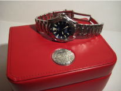
A Quartz watch. General wear and scratches around watch. Glass is like new.
Stainless steel bezel, casing and bracelet. Blue dial, silver rotating bezel, white hour markers and smaller white minute markers, silver hour and minute hands, silver and red tipped second hand, date at 3o'clock position, butterfly button release buckle (Omega branded). Comes in red Omega box. No papers. (#1007)
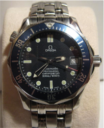
A mid-size, automatic watch. General wear marks around watch, glass in like-new condition, scratches on buckle.
Stainless steel bezel, casing and bracelet. Blue dial, blue rotating bezel, white hour markers and smaller white minute markers, silver hour and minute hands, silver and red tipped second hand, date at 3o'clock position, butterfly button release buckle (Omega branded).
No papers or box. (#1008)
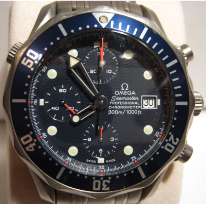
An automatic titanium watch. General wear around casing, bracelet and buckle.
Titanium bezel, casing and bracelet. Blue dial and 3 smaller dials, blue rotating bezel. On main dial; white hour markers and smaller white minute and second markers, silver hour and minute hands, red tipped stopwatch second hand. On 12o'clock dial; red stopwatch minute hand. On 6o'clock dial; red stopwatch hour hand. On 9o'clock dial; red second hand. Date at 3o'clock position, 2 stopwatch buttons, 2 crowns and butterfly button release buckle (Omega branded).
No papers or box. (#1011)
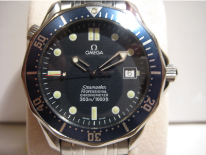
An automatic watch. General wear marks around watch, glass in like-new condition.
Stainless steel bezel, casing and bracelet. Blue dial, blue rotating bezel, white hour markers and smaller white minute markers, silver hour and minute hands, silver and red tipped second hand, date at 3o'clock position, butterfly button release buckle (Omega branded). No papers or box. (#1009)
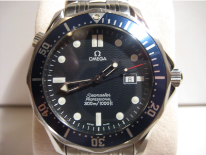
A Quartz watch. General wear marks around watch, glass in like-new condition.
Stainless steel bezel, casing and bracelet. Blue dial, blue rotating bezel, white hour markers and smaller white minute markers, silver hour and minute hands, silver and red tipped second hand, date at 3o'clock position, butterfly button release buckle (Omega branded). No papers or box. (#1010)
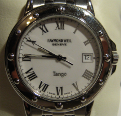
A Quartz, stainless steel gents wristwatch.
Stainless steel casing and bracelet. White dial, roman hour numerals, small minute markers, date at 3o'clock position, silver hour, minute and second hands and butterfly release buckle. Comes in fitted box (slight damage on inside), care & guarantee papers, and outer box. (#1013)
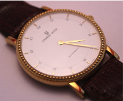
An automatic, 18carat gold hallmarked gents wristwatch.
White dial with raised gold baton hour markers, 24hour chapter ring, gold hour and minute hands, no seconds hand, crystal display (see through) back, 25 jewels. Associated tan croc style leather strap and gold buckle.
Comes in original watch case and outer box. No papers. (#1018)
£1469
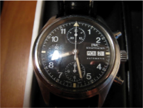
Automatic gents wristwatch, black dial with arabic numerals, day and date feature, black leather strap with stainless steel buckle. Comes in box with papers.
SOLD
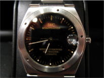
Stainless steel automatic gents wristwatch, black dial with gilt baton numerals, stainless steel bracelet and buckle. Comes with box and original guarantee.
SOLD